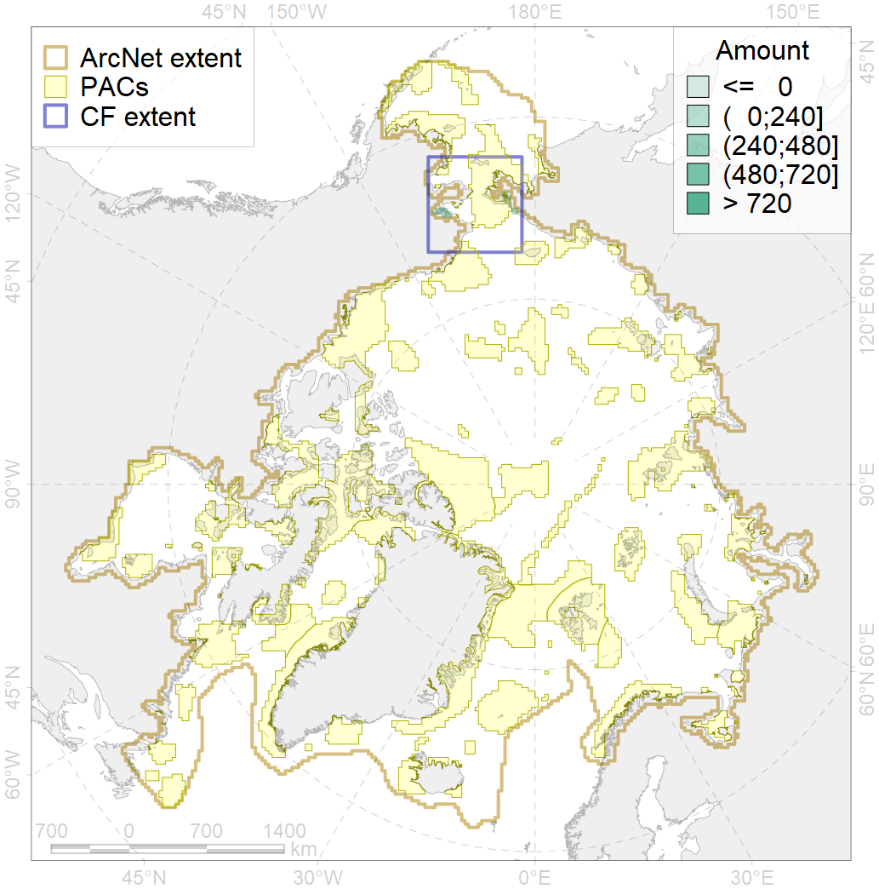

7078

| CF code | 7078 |
| CF name | I.2.1.2. Lagoons |
| Time Period | At least last 100 years |
| Source(s) | Harris et al., 2014; Carmack, Wassmann, 2006 |
| Seasonality | 1-12 |
| Depth Horizon | Sea floor |
| Methodology | Data obtained from the literature |
| Use Restrictions | Open access |
| Author Name | V. Spiridonov, W. Merritt |
| Notes | |
| Scenario’s Target | 0.4343167 |
| Target Achievement | 0.479 (Scenario: 110.4%) |
| PAC | Share of the Total Amount within the PAC | Share of the Target Achievement for the ArcNet | PAC’s Contribution to the Target Achievement |
|---|---|---|---|
| 5 | 35.9%46.9% | 81.6%105.8% | 74.0%95.8% |
| 6 | 0.0%8.5% | 0.0%19.5% | 0.0%17.7% |
| inner | 35.9%55.4% | 81.7%125.3% | 74.0%113.5% |
| outer | 64.1%93.3% | 28.7%94.9% | 26.0%85.9% |
| † supplement values are for area consistence whereas principal values are for Accenter compatible gridded stats |